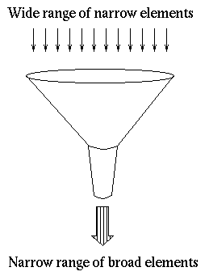

Previous | Toc | Next
Local area Harvesting
- Typically a narrow range of
metadata elements.
Analysis.
- A modest range of controlled vocabularies, you controll their
semantics and can distribute them to content providers
- Typically very poor syntax, and unfortunately no generally
accepted alternative
- You may invent syntactic sugar to remedy poor syntax, and
you can really benefit from them, while being a pain for people
doing wide-area metadata harvesting.
- Legacy metadata is not as good as custom metadata (in SAFARI
around 70% of the metadata has been recycled from local databases). A
harvested metadata database will most likely never be as good as a
SBIG.
- Your robot is not as good as you think, and your content providers
servers are most likely much worse still.
Dumb down necessary
